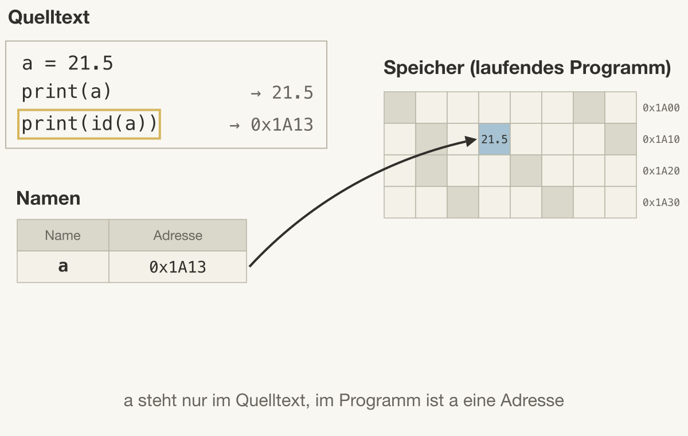
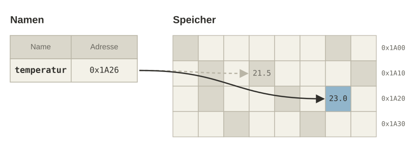
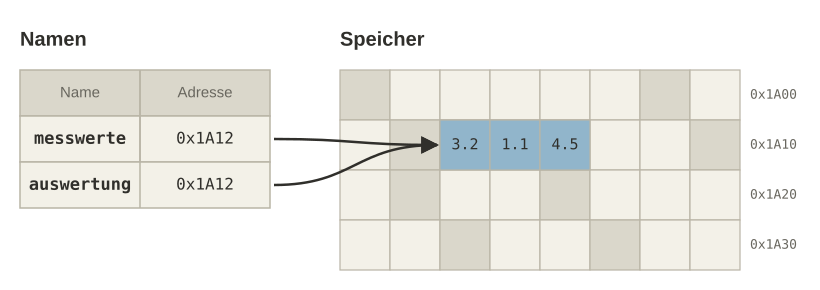
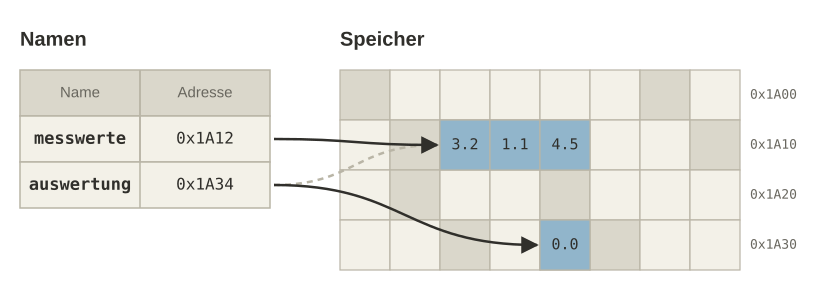
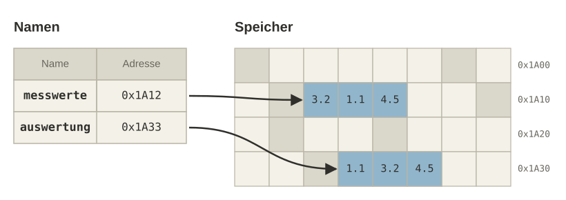

Speicher
Was eine Variable im Speicher ist
I never wrote things down to remember; I always wrote things down so I could forget.
— Matthew McConaughey
In 01c_Computerhardware haben wir gesehen, dass der Arbeitsspeicher aus Zellen besteht, die jeweils eine Adresse haben, und dass die CPU nur mit diesen Adressen arbeitet. In 02b_Datentypen haben wir Variablen mit Namen und Datentyp kennengelernt. Dieses Kapitel verbindet beides: Wir klären, was eine Variable im Speicher ist. Damit beantworten wir eine Frage, die in jedem Programm mit Messdaten auftaucht: Wenn wir eine Messreihe unter einem zweiten Namen weiterverwenden und dort sortieren, ist dann auch die ursprüngliche Messreihe sortiert?
Variablen im Speicher
Der Name im Code ist nicht der Speicher
Ein Variablenname wie a existiert nur im Quelltext. Er ist für uns Menschen gedacht, damit wir nicht mit Speicheradressen arbeiten müssen. Führt Python die Zeile a = 21.5 aus, geschehen zwei Dinge: Der Wert 21.5 wird in eine freie Speicherzelle geschrieben, und Python merkt sich in einer Namentabelle, dass der Name a für die Adresse dieser Zelle steht. Im laufenden Programm ist a also eine Adresse, also die Nummer der Speicherzelle, in der der Wert liegt.
a = 21.5
print(a)
print(id(a))Bei print(a) sucht Python den Namen in der Namentabelle, folgt der Adresse und liest den Wert aus der Zelle. Die eingebaute Funktion id() gibt die Adresse selbst aus; Python schreibt sie als Dezimalzahl, die Abbildung zeigt sie wie in 01c_Computerhardware hexadezimal. Welche Zahl genau herauskommt, ist bei jedem Programmlauf anders und spielt keine Rolle.

a steht im Quelltext; im laufenden Programm steht er in der Namentabelle mit der Adresse der Zelle, in der 21.5 liegt.Eine Zuweisung gibt dem Namen eine Adresse
Was passiert, wenn wir einer Variable einen neuen Wert zuweisen? Nach temperatur = 21.5 steht in der Namentabelle die Adresse der Zelle mit 21.5. Die zweite Zuweisung temperatur = 23.0 schreibt den neuen Wert nicht in diese Zelle, sondern in eine andere Zelle, und trägt deren Adresse beim Namen temperatur ein. Die beiden print(id(temperatur)) geben deshalb zwei verschiedene Adressen aus.
temperatur = 21.5
print(id(temperatur))
temperatur = 23.0
print(id(temperatur)) # andere AdresseIn der Abbildung zeigt der gestrichelte Pfeil die alte Verbindung zu 21.5, der durchgezogene Pfeil die neue Verbindung zu 23.0. Eine Zuweisung mit = verbindet also einen Namen mit der Adresse eines Werts. Hat ein Wert keinen Namen mehr, gibt Python seine Speicherzelle später wieder frei.

temperatur die Adresse von 23.0; der Wert 21.5 bleibt in seiner Zelle, hat aber keinen Namen mehr.Zwei Namen, eine Adresse
Eine Zuweisung kopiert die Adresse, nicht den Wert
Alias
Zwei Namen, die für dieselbe Adresse stehen, nennt man Alias. Jede Änderung am Wert an dieser Adresse ist über beide Namen sichtbar.
Steht auf der rechten Seite einer Zuweisung kein neuer Wert, sondern ein Name, dann bekommt der Name links die Adresse, die beim Namen rechts steht. Nach auswertung = messwerte stehen in der Namentabelle zwei Namen mit derselben Adresse. Es gibt weiterhin nur eine Liste im Speicher, und beide print(id(…)) geben dieselbe Zahl aus.
messwerte = [3.2, 1.1, 4.5]
auswertung = messwerte
print(id(messwerte))
print(id(auswertung)) # gleiche AdresseDas ist wichtig, weil es in Programmen mit Messdaten ständig vorkommt: Eine Messreihe wird unter einem neuen Namen an eine Auswertung weitergegeben. Ob die Auswertung dann das Original verändert, hängt davon ab, wie sie mit dem Namen umgeht. Das betrachten wir als Nächstes.

auswertung = messwerte stehen beide Namen für die Adresse 0x1A12; im Speicher liegt die Liste nur einmal.Modifizierbarkeit (Mutability)
Grundsätzlich unterscheidet man in Programmiersprachen zwischen veränderlichen (mutable) und unveränderlichen (immutable) Datentypen.
Mutability
Modifizierbarkeit beschreibt die Veränderbarkeit von Datenstrukturen.
- Ist ein Datentyp mutable können Variablen von diesem Typ direkt verändert werden.
- Ist er immutable kann man diese nur durch eine komplette Neubelegung verändern.
Um Programmierfehler zu verhindern und Zugriffssicherheit (Datenschutz) zu gewährleisten, unterscheiden einige Programmiersprachen sehr strikt zwischen mutable und immutable Datentypen. KI-Tools entscheiden auch hier automatisch: z.B. list statt tuple für eine Messreihe, die nach der Erfassung unveränderlich sein sollte. Die Wahl zwischen mutable und immutable ist damit dieselbe Art von Modellierungsentscheidung wie die Wahl zwischen int und float im Einstiegsbeispiel von 02b_Datentypen.
| Mutabel (änderbar) | Immutabel (nicht änderbar) |
|---|---|
list |
tuple |
set |
frozenset |
dict |
str |
bytearray |
bytes |
Auch die Zahlentypen int, float und bool sind unveränderlich. Mit dem Speicherbild aus den vorigen Folien heißt das: Bei einem unveränderlichen Wert bleibt der Inhalt der Speicherzelle immer gleich, eine Änderung ist nur durch eine neue Zuweisung möglich, also durch eine neue Adresse beim Namen.
Zwei Arten, etwas zu ändern
Mit dem Alias auswertung können wir auf zwei Arten „etwas ändern“, und die beiden Arten haben unterschiedliche Folgen für messwerte.
Bei einer neuen Zuweisung wie auswertung = [0.0] entsteht ein neuer Wert in einer anderen Speicherzelle, und beim Namen auswertung wird dessen Adresse eingetragen. Der Name messwerte steht weiterhin für die alte Adresse, die Messreihe ist unverändert.
auswertung = messwerte
auswertung = [0.0]
print(messwerte) # [3.2, 1.1, 4.5]
auswertung bekommt eine neue Adresse, messwerte bleibt unverändert.Ändern wir dagegen den Inhalt an der gemeinsamen Adresse, sieht das jeder Name, der für diese Adresse steht. Die Methode .sort() sortiert eine Liste an Ort und Stelle, sie ändert also die Werte in den Speicherzellen der Liste. Weil messwerte dieselbe Adresse hat, ist danach auch messwerte sortiert.
auswertung = messwerte
auswertung.sort()
print(messwerte) # [1.1, 3.2, 4.5]Den Inhalt ändern kann man nur bei veränderlichen Datentypen wie list, dict oder set. Bei unveränderlichen Typen wie int, float, str oder tuple gibt es nur die neue Zuweisung; ein Alias auf einen solchen Wert kann deshalb nie zu einer unerwarteten Änderung führen.
Eine Kopie bekommt eine eigene Adresse
Damit ist die Hörsaalfrage beantwortet: Nach auswertung = messwerte und auswertung.sort() ist auch messwerte sortiert, weil beide Namen für dieselbe Adresse stehen. Soll die Auswertung die Messreihe nicht verändern, brauchen wir eine Kopie. Die Methode .copy() legt die Werte der Liste in neue Speicherzellen, und der Name auswertung bekommt deren Adresse.
messwerte = [3.2, 1.1, 4.5]
auswertung = messwerte.copy()
print(id(messwerte))
print(id(auswertung)) # andere Adresse
auswertung.sort()
print(messwerte) # [3.2, 1.1, 4.5]Jetzt geben die beiden print(id(…)) verschiedene Adressen aus, und das Sortieren von auswertung lässt messwerte unverändert. Mit id() können wir in jedem Programm prüfen, ob zwei Namen für dieselbe Adresse stehen oder für eine Kopie.

.copy() stehen die beiden Namen für zwei verschiedene Adressen; sortiert ist nur die Kopie.